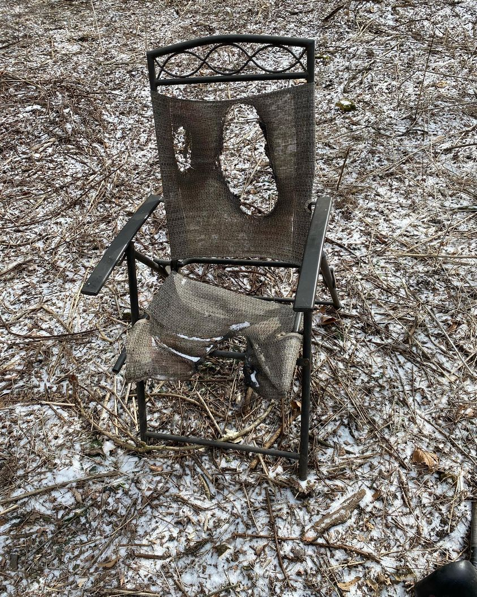

Timeline photos
This is a burned out chair I once found on a cold February day in a homeless camp in Akron Ohio.
I wanted to present an image of suffering today, given the state of the world. But I didn’t want to add too much to your already suffering heart. So I am posting this chair.
Thousands of innocent Palestinians and Israelis are dying violently right now. But it is just the latest horror in an endless ocean of horror.
I’ve been recently weighing the comments made by Madeleine Albright where she stated that the death of 500,000 dead Iraqi children was "a very hard choice, but the price-we think the price is worth it".
How many children will die in the months to come in the Israeli, Palestinian crisis? Will the price be worth it? Of course not. Wars never end no matter how horrific the price.
There is a child waking up right now in a car they call “home” in our city of Akron Ohio. It is 41 degrees. They are cold. They are hungry. They have no water. They have no toilet. They are trying to go to school.
We torture that child through societal neglect because “we think the price is worth it.”
Our institutions torture us for the chance of winning the game of thrones. They will not save us. Only we will save each other.
May your suffering open a wound that allows your heart to give more freely, to love more openly. You are the goodness of the world.
May the universe comfort you and protect you.